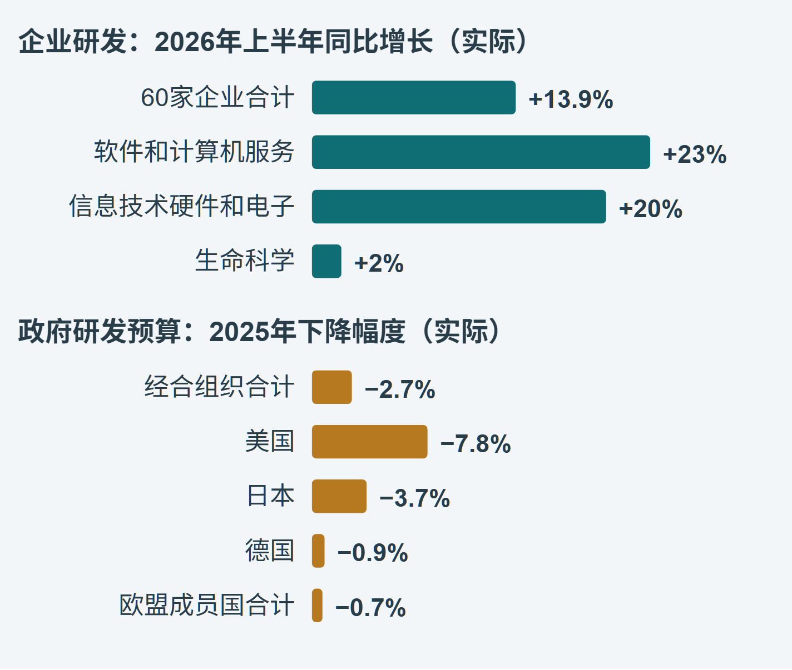

这事有研究 / 国际科技智库周报
经合组织（OECD） · 2026-11-17（本期补录） · 统计发布
经合组织11月17日发布的数据显示，企业研发和政府研发预算朝相反方向变化。企业数据来自经合组织的“企业研发短期追踪”（SwiFTBeRD），它跟踪全球60家最大研发投入企业的季度财报，比正式的企业研发统计更早反映变化；政府数据来自各国官方统计的政府研发预算拨款。
企业端：增长集中在数字行业。 这60家企业2026年上半年研发支出扣除通胀后同比增长13.9%，2025年全年为5.6%。软件和计算机服务企业增长23%，信息技术硬件和电子企业增长20%；生命科学企业只增长2%，汽车和航空航天企业的研发支出已连续四个半年度（两年）下降。名义研发支出增幅最大的是英伟达、Meta和三星电子，企业财报把增长归因于开发和部署前沿人工智能模型。经合组织还指出，另有几家快速增长的人工智能企业，研发规模已接近进入这一样本的门槛。
政府端：预算缩减，定向比例下降。 经合组织国家政府研发预算2025年实际下降2.7%，2024年已下降3.7%，扣除通胀后已低于2020年水平。美国下降7.8%，日本下降3.7%，德国下降0.9%，欧盟成员国合计下降0.7%（不含欧盟预算资助的研发项目）。

数据来源：经合组织2026年11月17日统计发布。企业数据为SwiFTBeRD样本60家企业，政府数据为各国政府研发预算拨款，均扣除通胀。
政府研发预算中，有明确用途方向（如卫生、国防、能源）的“定向”部分，在经合组织国家从2024年的68.0%降到2025年的66.4%，欧盟从45.4%降到44.2%。研发税收激励（政府对企业研发的税费减免）不计入上述预算，也通常不指定研究方向；把它计入后，经合组织2024年的定向比例只有55.6%。税收激励占政府研发支持总额的比重已从2000年的6%升至2024年的18%，经合组织认为这是过去二十年定向比例下降的主要原因之一。